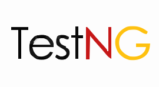

HI, I'M
ISSACRAJA
Software Test Engineer - 4+ Years Experience
Manual Testing • Test Automation • API Testing
About
Quality-focused engineer with a testing-first mindset.
I'm a Senior Software Test Engineer with 4+ years of experience in both manual and automation testing, focused on delivering quality across Web, Mobile, AI and API-based applications. My work combines functional testing, regression testing, integration testing, smoke and sanity checks, exploratory testing and automation-driven validation.
I specialize in building and maintaining automated test frameworks using Selenium with Java and Playwright with JavaScript/TypeScript, while also understanding the broader QA lifecycle through test case design, defect reporting, cross-browser testing and CI/CD integration. This approach helps ensure reliable software quality from early validation through release readiness.

Problem Solver
Team Player
Continuous Learner
Experience
My professional journey
Skills
QA expertise across manual and automated testing.

TestNG Cucumber Maven Postman Jira Xray IntelliJ IDEA VS Code Cursor GitHub Docker Jenkins AWS Cucumber
Cucumber Maven
Maven Jira
Jira IntelliJ IDEA
IntelliJ IDEA.svg) VS Code
VS Code AWS
AWSProjects
Real-world testing experience
Quest Agent
Validated an AI-powered RAG assistant designed to retrieve and provide information from Knowledge Items and Quality Issues.
- Prompt validation
- RAG response testing
- Source reference validation
- Hallucination testing
System Design Agent
Validated an AI-powered RAG assistant designed to retrieve and provide information from M365, Service Matrix, Legacy and Mech Templates.
- Prompt validation
- RAG response testing
- Source reference validation
- Hallucination testing
Resource Hub Agent
Validated an AI-powered RAG assistant designed to retrieve and provide information from Quality Issues and SharePoint.
- Prompt validation
- RAG response testing
- Source reference validation
- Hallucination testing
HR Review Agent
Validated an AI-powered RAG assistant designed to retrieve and rate individual employees in the organization from Cornerstone, Outlook and OneNote.
- Prompt validation
- RAG response testing
- Source reference validation
- Hallucination testing
Execution+
Validated an transmission foundation design & line design workflows, including Excel-based imports, geotechnical mapping, foundation rules and calculations.
- Functional validation
- Regression testing
NIA Networks
Validated an engineering automation platform that generates network deliverables including DWG, PDF, Excel and DOCX outputs from NetBox data using a microservices-based architecture and AutoCAD automation.
- Functional validation
- Regression testing
- API testing
Career Development Platform
Validated an enterprise Talent Intelligence and Career Development Platform supporting employee skill management, assessments, career development, supervisor dashboards and leadership analytics.
- Functional validation
- Regression testing
- UI testing
DistrigoBoost
Validated an digital automotive parts ordering and dealer support platform used across global Stellantis networks.
- Functional validation
- Regression testing
Flauraud
Validated an digital automotive parts ordering and dealer support platform used across Europe.
- Functional validation
- Regression testing
Frogdata
Validated an advanced analytics and BI platform designed for automotive dealerships to optimize sales, service performance and operational decision-making.
- Functional validation
- Regression testing
HDFC P2P
Validated an e-procurement platform (P2P) that connects end users and suppliers, enhancing procurement efficiency by automating purchase orders, invoices and payment processes. It significantly reduces procurement cycle times.
- Functional validation
- Regression testing
Yokogawa GePS
Validated an e-procurement application, providing a supply chain platform (P2P) between end users and suppliers. This platform enhances procurement efficiency by automating purchase orders, invoices and payment processes, thereby reducing procurement cycle times.
- Functional validation
- Regression testing